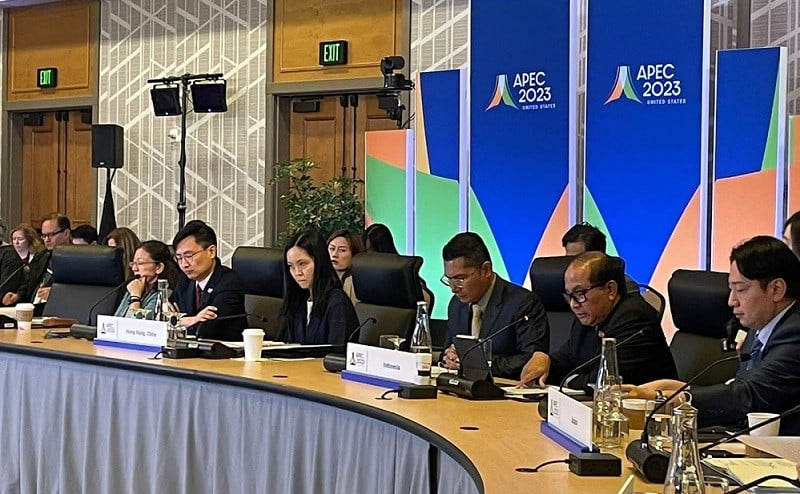
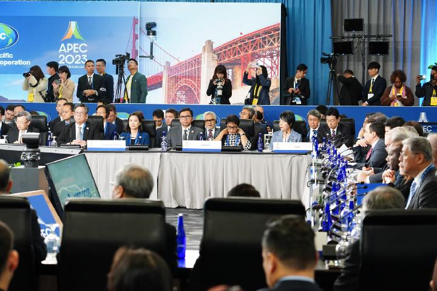

Asia-Pacific Economic Cooperation (APEC) adalah forum kerja sama ekonomi regional yang terdiri dari 21 ekonomi anggota yang berlokasi di kawasan Asia-Pasifik. APEC bertujuan untuk meningkatkan pertumbuhan ekonomi yang berkelanjutan, memperkuat integrasi regional, dan mendorong perdagangan serta investasi bebas di kawasan ini.


Tujuan Utama APEC
Perdagangan Bebas dan Investasi
APEC mendorong liberalisasi perdagangan dan investasi untuk mengurangi hambatan, seperti tarif dan kebijakan proteksionis.
Kerja Sama Ekonomi dan Teknik
APEC memfasilitasi kerja sama ekonomi dan teknis untuk meningkatkan kapasitas ekonomi anggota dalam menghadapi tantangan global.
Peningkatan Konektivitas
Menciptakan konektivitas fisik (infrastruktur), institusional (kebijakan), dan orang-ke-orang (pendidikan dan mobilitas tenaga kerja).
Contoh: Perserikatan Bangsa-Bangsa (PBB), World Trade Organization (WTO), atau ASEAN.
Penguatan Integrasi Ekonomi Regional
Mendukung integrasi yang lebih dalam melalui inisiatif seperti Kawasan Perdagangan Bebas Asia-Pasifik (FTAAP).
Manfaat Kerja Sama di APEC
Meningkatkan Perdagangan Antarnegara
APEC menciptakan peluang ekspor dan impor dengan menghapus tarif serta hambatan perdagangan.
Pertumbuhan Ekonomi yang Merata
APEC membantu negara berkembang di kawasan Asia-Pasifik untuk mengejar ketertinggalan melalui transfer teknologi dan keahlian.
Dukungan pada UKM
APEC memfasilitasi akses UKM ke pasar global melalui kebijakan perdagangan yang inklusif.
Stabilitas Regional
Kerja sama dalam forum ini membantu menjaga stabilitas ekonomi dan politik di kawasan Asia-Pasifik.
Kolaborasi Inovatif
Mendorong inovasi dalam sektor teknologi, manufaktur, dan pertanian untuk keberlanjutan jangka panjang.
Manfaat Kerja Sama di Bidang APEC
Efisiensi dalam Menangani Masalah Global
Dengan banyak negara bekerja sama, solusi yang dihasilkan biasanya lebih efektif.
Penguatan Hubungan Diplomatik
Memperkuat hubungan antarnegara melalui dialog yang terorganisasi.
Berbagi Sumber Daya
Negara-negara dapat saling berbagi teknologi, pengetahuan, dan dana untuk mengatasi tantangan bersama.
Peningkatan Stabilitas dan Keamanan Global
Melalui diskusi dan pengambilan keputusan kolektif untuk mencegah konflik.